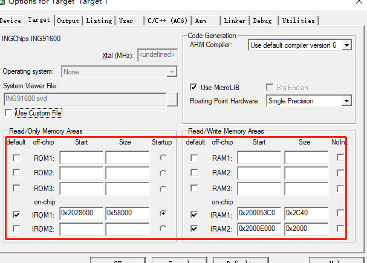

Cache是CPU内部缓存，用于临时存储CPU需要频繁访问的数据和指令，以加快CPU的数据访问速度；而RAM是主存储器，用于存储程序和数据，是CPU和外部设备之间的桥梁，其访问速度相对较慢。
速度：Cache的访问速度非常快，一般能够达到纳秒级别的响应速度；而RAM的访问速度相对较慢，一般需要几十到几百纳秒的时间。
容量：Cache的容量比RAM要小得多，一般只有几百KB到几十MB的大小；而RAM的容量比Cache要大得多，一般从几百MB到数GB不等。
成本：Cache的制造成本较高，但是由于其容量较小，因此总成本相对较低；而RAM的制造成本较低，但是容量较大，因此总成本相对较高。
因此，将 Cache 映射为 RAM 是一个不太常见的做法，因为 Cache 和 RAM 有着不同的设计目标和工作机制，将 Cache 映射为 RAM 可能会影响系统性能。如果真的需要将 Cache 映射为 RAM ，一般是出于某些特殊的需求，比如：
- 需要在 Cache 中执行代码，或者保存数据
- 系统的 RAM 不够用
- 需要速率更高的 RAM
- 部分硬件只能访问特定地址范围内的内存
ING916XX 的 Cache 由 I-Cache-M 和 D-Cache-M 两部分组成，均可作为 RAM 使用，在使用之前我们先进行 Coremark 跑分，测试一下映射为 RAM 与否对整个系统性能的影响。
| 名称 | 起始地址 | 大小（KiB） | 备注 |
|---|---|---|---|
| D-Cache-M | 0x2000E000 | 8 | 可映射为RAM |
| I-Cache-M | 0x20010000 | 8 | 可映射为RAM |
Coremark跑分1
我们将 I-Cache-M 和 D-Cache-M 是否映射为 RAM 所组成的 4 种情况分别进行跑分，其跑分的结果如下表所示。
| Compiler | I-Cache-M 映射方式 |
D-Cache-M 映射方式 |
MHz | Coremark | Coremark/ MHz |
|---|---|---|---|---|---|
| GCCClang 13.0.0 | Cache | Cache | 201.60 | 557.32 | 2.76 |
| GCCClang 13.0.0 | RAM | Cache | 201.60 | 8.41 | 0.04 |
| GCCClang 13.0.0 | Cache | RAM | 201.60 | 555.99 | 2.75 |
| GCCClang 13.0.0 | RAM | RAM | 201.60 | 8.41 | 0.04 |
通过上述表中的跑分结果，可以看出来将 D-Cache-M 映射为 RAM 对于系统整体的性能影响几乎可以忽略不计；而将 I-Cache-M 映射为 RAM 会导致整个系统的性能极度下降。所以，若需要使用，可以先使用 D-Cache-M 对应的8K空间。
用法举例
自由使用：申请固定地址内存
1.Arm Compiler V5 版本
#define RAM_SIZE 8192 // RAM的大小，单位为字节
#define D_CACHE_ADDR 0x2000E000
#define I_CACHE_ADDR 0x20010000
char RAM_D[RAM_SIZE] __attribute__((at(D_CACHE_ADDR)));
char RAM_I[RAM_SIZE] __attribute__((at(I_CACHE_ADDR)));
2.Arm Compiler V6 版本
#define RAM_SIZE 8192 // RAM的大小，单位为字节
char RAM_D[RAM_SIZE] __attribute__((section(".ARM.__at_0x2000E000")));
char RAM_I[RAM_SIZE] __attribute__((section(".ARM.__at_0x20010000")));
有时为了 提高程序可读性、避免未定义的行为 等，我们需要在定义变量的同时就对变量进行初始化，需要参照一下步骤进行实现：
- 修改.sct文件 :在.sct文件中添加对应的RAM区，如下图所示，添加一段IRAM2

- 定义C函数 :方便在启动文件中调用
void cache_to_ram(void)
{
SYSCTRL_CacheControl(SYSCTRL_MEM_BLOCK_AS_CACHE ,SYSCTRL_MEM_BLOCK_AS_SYS_MEM );
}
- 修改汇编代码
在 startup_ing91600.s 文件中存在如下一段代码
; Reset Handler
Reset_Handler PROC
EXPORT Reset_Handler
IMPORT __scatterload
; this push is consumed by main
PUSH {R1, LR}
; save msp
MRS R1, MSP
MSR PSP, R1
我们需要在上述的代码下方添加如下两行代码，在scatter_load之前调用 SYSCTRL_CacheControl 将D_Cache设置为RAM。
IMPORT cache_ram
BL cache_ram
- 初始化 ：以 Arm Compiler V6 版本举例
#define RAM_SIZE 10 // RAM的大小，单位为字节
char RAM[RAM_SIZE] __attribute__((section(".ARM.__at_0x2000E000"))) = {'A', 'B', 'C', 'D', 'E', 'F', 'G', 'H', 'I', 'J'};
使用动态分配器（如 Arena allocator）
Arena-allocator 竞技场内存分配器是一种内存分配器，它使用的内存块都是从预先分配好的一块连续的内存空间中划分出来的。当需要分配内存时，分配器会从这块内存池中找到一块足够大的内存块，并返回给调用者。由于使用的内存空间是连续的，因此避免了内存碎片的产生，从而提高了内存分配效率和程序的运行性能。
1.申请内存
#define RAM_SIZE 8192 // RAM的大小，单位为字节
char RAM[RAM_SIZE] __attribute__((section(".ARM.__at_0x2000E000")));
2.创建结构体 Arena
// 定义一个结构体，表示Arena
typedef struct arena {
char *start; // Arena起始地址
char *avail; // 当前可用地址
size_t block_size;
size_t used;
} arena;
3.创建相关函数
1）arena_init — 初始化函数
void arena_init(arena *a, void *block, size_t size) {
a->start = (char *)block;
a->avail = a->start;
a->block_size = size;
a->used = 0;
}
2）arena_alloc— 内存分配函数
// 分配内存
void *arena_alloc(arena *a, size_t size) {
if (a->block_size - a->used >= (long)size) {
void *p = a->avail;
a->avail += size;
return p;
} else {
return NULL;
}
}
3.使用 Arena allocator 方法进行内存分配的伪代码如下所示。
// 在RAM上创建一个Arena allocator
arena_init(&arena, RAM, RAM_SIZE);
// 使用Arena allocator分配内存
void *block = NULL;
size_t size = 100;
block = arena_alloc(&arena, size);
// 使用block
...
上述使用的是比较简单的 arena allocator 使用方式，若要复杂使用，可根据需求对结构体、函数以及使用的机制做相应的修改即可。
注意事项
- 睡眠无数据保持：低功耗状态时，这两个内存块里的数据（无论处于哪种模式）都会丢失，而其它内存里的数据则可以保持；
- 从低功耗状态唤醒时，这两个内存块都将恢复默认值AS_CACHE，需要重新配置才能使用；
- 将 Cache 映射为普通 RAM 后，系统缺少高速缓存，性能有可能明显下降。
-
Coremark跑分是通过运行测试程序来评估处理器性能的一种方法。 ↩